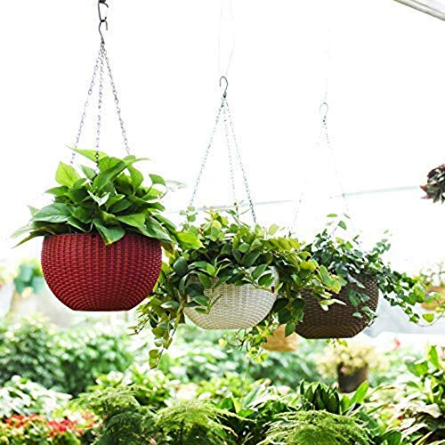
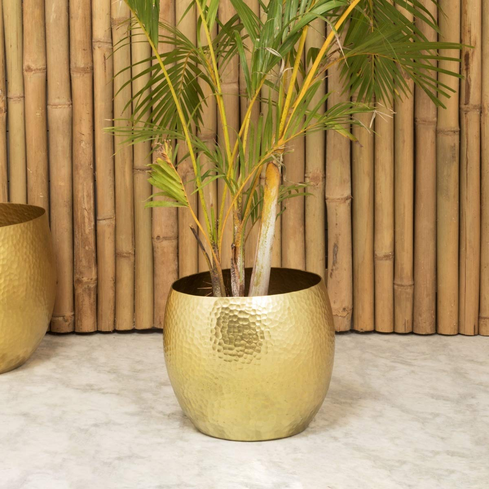
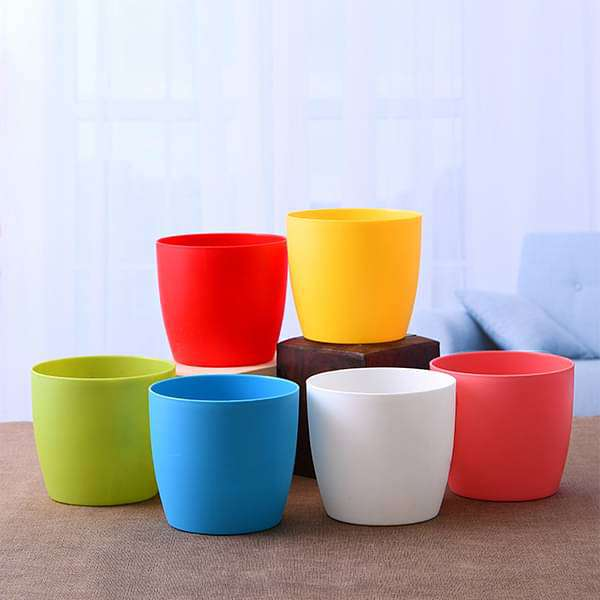
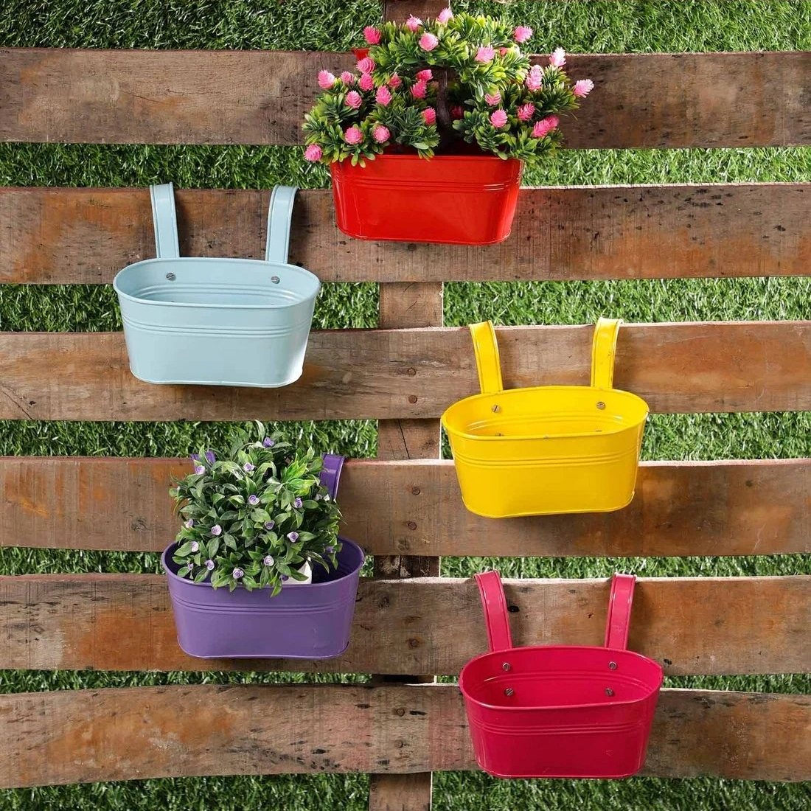
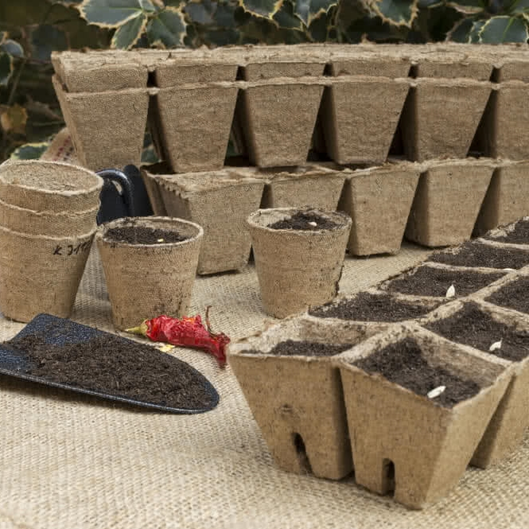

Clay pots provide a healthy environment for most plants. The porosity of clay allows air and moisture to penetrate the sides of the pot.

Hanging Pot
A hanging pot is a suspended container used for growing decorative plants. Typically they are hung from buildings.

Metal Pot
They enhance the ambience of your home and put you in a good mood. The offered metal planters are of great quality, durable, affordable, easy to maintain, and highly resistant to sunlight and frost.

Plastic Pot
Plastic pots are made of inert materials and are considered safe for growing plants. Many are made of recyclable plastic so disposal is environmentally friendly.

Railing Pot
You can grow many ornamental plants, flowering plants, vegetables and fruits, and even succulents in railing planters.

Coir Pot
Coir pots are biodegradable planting containers made from the fibrous husk of the coconut. These soft, flexible pots are ideal for transplanting new plants as they can be placed directly in the ground.